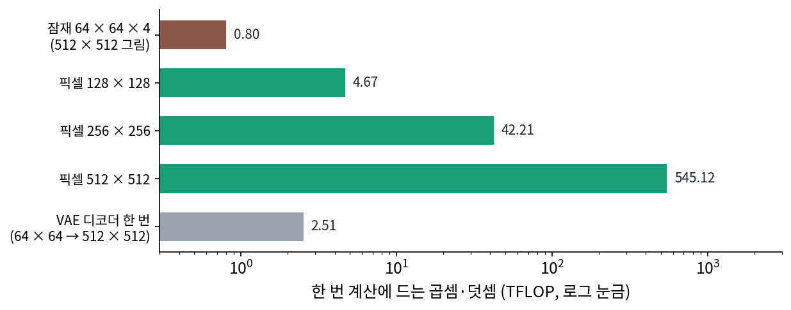

잠재 디퓨전: 줄인 칸에서 퍼뜨리고 끝에 한 번 되살린다
부품은 다 모였다. 결을 맡을 압축기가 있고, 압축기가 내놓는 잠재는 칸의 배치가 남은 작은 그림이며, 스케일 값으로 크기도 맞췄다. 이제 잡음 섞기, 잡음 예측 신경망, 샘플러를 모두 그림 대신 잠재 위에 놓으면 된다. 그렇게 하면 무엇이 얼마나 가벼워지고, 압축 배율은 얼마로 해야 할까?
역사: 배율을 1에서 32까지
롬바흐와 동료들은 압축 배율을 f ∈ {1, 2, 4, 8, 16, 32}로 바꿔 가며 같은 크기의 디퓨전 모델을 A100 한 장으로 같은 걸음 수만큼 학습시켰다(배율 1은 픽셀에서 직접 퍼뜨리는 디퓨전). ImageNet 에서 200만 걸음을 학습하는 동안, 배율 1과 2는 학습이 느렸고 배율 32는 몇 걸음 지나지 않아 그림의 질이 멈췄다. 앞의 것은 지각 압축까지 디퓨전에게 거의 다 맡긴 탓이고, 뒤의 것은 압축기가 너무 많이 버린 탓이라고 논문은 풀이했다. 200만 걸음 뒤 배율 1과 배율 8의 FID(만든 그림과 실제 그림의 통계적 거리, 작을수록 좋다)는 38이나 벌어졌다. 결론은 배율 4 ~ 16이 효율과 질의 균형이 좋고, 그 가운데 4와 8이 가장 좋다는 것이었다.
논문은 앞선 두 단계 방식보다 덜 줄여도 되는 까닭도 적었다. 번호를 하나씩 이어 쓰는 트랜스포머는 잠재를 한 줄로 펴서 다뤄, 줄의 길이 때문에 크게 줄여야 했다. 디퓨전의 U-Net 은 합성곱으로 2차원 칸 배치를 그대로 읽으므로, 배율 8 정도의 순한 압축으로도 계산이 감당된다. Stable Diffusion 은 이 논문의 압축기 가운데 배율 8, 채널 4인 것을 그대로 썼다.
두 길: 학습과 생성
학습에서는 학습 그림마다 인코더를 한 번 돌려 잠재를 얻고, 거기에 잡음을 섞어 잡음 예측 신경망을 학습한다. 압축기는 이미 학습이 끝나 얼려 두었으므로, 잠재를 미리 한 번 계산해 저장해 두어도 된다. 손실은 그림 대신 잠재에 쓴 잡음 맞히기 손실 그대로다.
생성에서는 인코더가 필요 없다. 잠재 크기의 표준정규 잡음에서 출발해 샘플러로 잡음을 걷어 내고, 마지막에 스케일 값으로 나눠 디코더를 한 번 돌린다.
flowchart LR
subgraph 학습
X["그림 x<br/>512 × 512 × 3"] --> E["인코더 (얼림)<br/>× 스케일 값 κ"]
E --> Z0["잠재 z₀<br/>64 × 64 × 4"]
Z0 --> N["잡음 섞기<br/>zₜ = αₜ z₀ + σₜ ε"]
N --> U["잡음 예측 신경망 학습"]
end
subgraph 생성
R["잡음 N(0, I)<br/>64 × 64 × 4"] --> S["샘플러<br/>신경망을 수십 번 부른다"]
S --> ZG["잠재 z₀"]
ZG --> D["÷ κ 뒤 디코더 한 번"]
D --> XG["그림 512 × 512 × 3"]
end
이렇게 미리 학습해 얼려 둔 압축기의 잠재 위에서 잡음 섞기와 잡음 맞히기를 모두 하는 디퓨전을 잠재 디퓨전 (줄인 칸에서 퍼뜨리는 디퓨전 / latent diffusion)이라 한다. 잡음 섞기, 잡음 예측, 샘플러에 대해 지금까지 배운 것은 하나도 바뀌지 않는다. 바뀐 것은 그 모든 것이 놓인 공간이다.
계산은 얼마나 주나
Stable Diffusion 1.x 의 U-Net 을 그대로 두고 입력만 바꿔, 한 번 부를 때의 곱셈과 덧셈 횟수(둘을 따로 하나씩 센 FLOP)를 세었다. 잠재 64 × 64 × 4에 걸면 0.80 TFLOP(1조 번)이다. 같은 U-Net 을 입력 채널만 3으로 바꿔 512 × 512 픽셀에 직접 걸면 545 TFLOP 로, 679배다. 칸 수는 64배인데 계산은 그보다 열 배 더 늘었다. 칸 수에 비례하는 합성곱과 달리, 칸끼리 견주는 어텐션은 칸 수의 제곱으로 늘기 때문이다.

대신 디코더가 새로 들어왔다. 디코더 한 번은 2.51 TFLOP 로 U-Net 을 세 번 부르는 것과 비슷하다. 높은 해상도에서 일하는 합성곱 층이 많아서다. 그래도 디코더는 그림 한 장에 한 번만 돌고, U-Net 은 걸음마다 돈다.
ML에서: 인코더가 다시 필요한 순간
글로 그림을 만들 때는 디코더만 쓰지만, 이미 있는 그림에서 출발하는 일에는 인코더가 다시 나온다. 사진을 조금 고쳐 그리는 일(ComfyUI 의 VAEEncode 뒤 KSampler 의 denoise 를 1보다 작게)은 사진을 잠재로 줄이고, 잡음을 중간 수준까지만 섞은 뒤 거기서부터 걷어 낸다. 그림의 일부만 다시 그리는 일도 사진의 잠재에서 가려 둔 칸만 새로 만든다. 영상 모델은 압축기가 시간 축도 줄인다. Wan 2.1 의 압축기는 가로세로 8배에 시간 4배를 줄이고, Wan 2.2 의 것은 가로세로 16배, 채널 48이다(ComfyUI latent_formats.py). 반대 방향의 시도도 있다. ComfyUI 에는 압축 배율이 1인, 곧 압축기 없이 픽셀에서 직접 퍼뜨리는 모델(Chroma Radiance, HiDream-O1 등)도 들어 있다. 이런 모델의 신경망은 픽셀 조각을 받아, 섞인 잡음이 아니라 깨끗한 그림을 맞히는 꼴(Chroma Radiance 의 한 판, HiDream-O1)을 쓰고 그 답을 샘플러가 쓰는 속도로 바꿔 내놓는다. 잡음 맞히기를 압축기 없이 픽셀로 옮기면 무엇이 무너지기에 그렇게 하는지는, 그림을 큰 조각으로 잘라 트랜스포머에 넣을 때 드러난다.
문제 10. 영상 편집의 프록시
4K(3840 × 2160) 영상을 편집하는 프로그램이 원본 대신 960 × 540짜리 사본(프록시)을 만들어 편집 화면에 쓴다. 편집하는 동안 효과를 200번 고쳐 보고, 다 고친 뒤에 원본에 한 번 적용해 내보낸다. 효과 한 번의 계산은 픽셀 수에 비례한다고 하자. (가) 프록시는 픽셀 수가 몇 분의 1인가? (나) 원본에서 200번 고쳐 보는 계산을 1로 칠 때(곧 원본 한 번은 1/200), 프록시로 고쳐 보고 원본에 한 번 내보내는 계산은 얼마인가? (다) 프록시 화면에서 「잘됐다」고 본 것이 원본에서도 잘되었다고 믿어도 되는 경우와 안 되는 경우는?

(가)는 3840 ÷ 960 = 4, 2160 ÷ 540 = 4라서 16분의 1이요.

(나)는 200번이 16분의 1씩이니까 200 ÷ 16 = 12.5번어치, 거기에 원본 한 번을 더하면 13.5번어치예요. 원본에서 200번 하는 것과 견주면 13.5 ÷ 200 = 0.0675, 15분의 1 정도요.

내보내기 한 번을 더해도 15분의 1이에요. 그 한 번이 프록시 한 번보다 훨씬 비싼데 왜 크게 안 늘었을까요?

고쳐 보는 횟수가 200번이고 내보내기는 한 번이니까. 비싼 일을 한 번만 하면 횟수 많은 일을 싸게 한 게 다 남아.

(다)는 색, 구도, 자르기처럼 프록시에서도 보이는 건 믿어도 되고, 머리카락 결이나 작은 자막처럼 프록시에서 뭉개지는 건 못 믿어. 원본에서 내보낸 뒤에야 드러나니까.

그래요. 잠재 디퓨전에서는 샘플러의 수십 걸음이 「고쳐 보기」, 디코더가 「내보내기」예요. 다만 잠재는 프록시와 달리 결을 되살리는 디코더가 따로 있어요.

보고서를 개조식 초안으로 열 번 고치고, 마지막에 한 번 문장으로 풀어 쓰는 거랑 같네요.
문제 11. 한 장을 뽑는 데 드는 계산
Stable Diffusion 1.x 의 U-Net 을 한 번 부르는 데 잠재 64 × 64에서 0.803 TFLOP, 같은 U-Net 을 512 × 512 픽셀에 직접 걸면 545.1 TFLOP 가 든다. 디코더 한 번은 2.515 TFLOP 다. 한 걸음에 U-Net 을 한 번 부른다. (가) 30걸음으로 한 장을 뽑을 때 잠재 디퓨전의 계산은 모두 얼마이고, 그 가운데 디코더의 몫은? (나) 같은 30걸음을 픽셀에서 하면 몇 배인가? (다) 몇 걸음 만에 그림을 뽑도록 증류한 모델로 4걸음만 걸으면 디코더의 몫은?
(가)는 30 × 0.803 = 24.10에 2.515를 더해 26.61 TFLOP 요. 디코더 몫은 2.515 ÷ 26.61 = 9.4%예요.
(나)는 30 × 545.1 = 16,353 TFLOP, 26.61로 나누면 614배. U-Net 한 번의 비 679배보다 조금 작네.
왜 조금 작아졌죠?
잠재 쪽에만 디코더 한 번이 더 붙으니까요. 픽셀 디퓨전은 되살릴 게 없어요.

(다)는 4 × 0.803 = 3.21에 2.515를 더해 5.73이고, 디코더 몫이 2.515 ÷ 5.73 = 43.9%예요. 거의 절반이 디코더네요.
그래요. 걸음 수를 줄일수록 「한 번뿐인 일」의 몫이 커져요. 몇 걸음 모델에서는 디코더를 가볍게 만드는 일이 따로 중요해져요.
택배를 서른 번 나눠 보내다가 네 번으로 줄이면, 포장 한 번에 드는 시간이 갑자기 크게 느껴지는 거랑 같네요.
문제 12. 사진에서 출발하기
ComfyUI 에서 사진 한 장을
VAEEncode로 잠재로 줄여KSampler에 넣고, 걸음 수 20,denoise0.6으로 둔다. 코드(comfy/samplers.py의set_steps)는 이때 걸음 수 int(20 ÷ 0.6)짜리 일정을 만들어 그 끝의 시그마 21개만 쓴다. (가) 몇 걸음짜리 일정을 만들고, 그 가운데 앞의 몇 걸음을 건너뛰는가? 실제로 걷는 걸음은 몇 개인가? (나) 출발점은 무엇인가? (다)denoise를 0에 가깝게 두면 원래 사진이 그대로 나올까? 압축기의 되살리기 PSNR(사진 다섯 장 평균 28.16 dB)과 이어서 설명하라.
(가)는 20 ÷ 0.6 = 33.3이라 33걸음짜리 일정이에요. 시그마 34개 가운데 끝의 21개를 쓰니까 앞의 13걸음을 건너뛰고, 걷는 건 20걸음이요.
(나)는 사진의 잠재에 잡음을 섞은 거야. 건너뛴 13걸음만큼은 이미 걸었다 치고, 14번째 걸음의 잡음 크기만큼 섞은 데서 시작해.
그럼 그 잡음 크기에서 남은 것은 사진의 무엇일까요?
큰 모양과 색이요. 잡음은 촘촘한 결부터 덮으니까요. 그래서 구도는 사진을 따르고 결은 새로 그려지는 거고요.
(다)는 잡음을 거의 안 섞으면 고칠 것도 없으니까 원래 사진이 그대로 나오겠죠.
그 길에서 사진은 어떤 단계를 거쳤죠?

인코더로 줄이고 디코더로 되살렸어요. 아, 디퓨전이 아무것도 안 해도 줄였다 되살린 것만으로 28 dB 쯤의 차이가 생기네요. 작은 글씨였다면 다른 글자가 됐을 거고요.
그래요. 잠재 디퓨전에서 사진을 고치는 모든 일은 압축기를 한 번 왕복하는 값을 먼저 치러요. 그래서 고치지 않을 칸까지 바뀌지 않게 하려면, 고친 칸만 원래 사진에 다시 붙이는 식의 처리를 따로 해요.
문서를 스캔해서 고친 다음 다시 인쇄하면, 고치지 않은 쪽도 스캔 품질만큼 흐려지는 거랑 같네요.